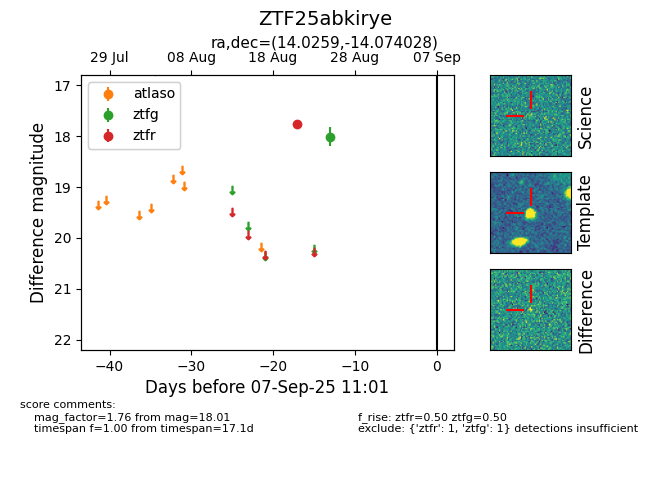

Target ZTF25abkirye at 2025-08-26 12:55, see:
FINK: fink-portal.org/ZTF25abkirye
Lasair: lasair-ztf.lsst.ac.uk/objects/ZTF25abkirye
ALeRCE: alerce.online/object/ZTF25abkirye
alt names
ZTF25abkirye (ztf,fink)
coordinates:
equatorial (ra, dec) = (14.0259,-14.07403)
galactic (l, b) = (127.9298,-76.90048)
photometry
last ztfg=18.01, ztfr=17.76
1 ztfg, 1 ztfr detections
